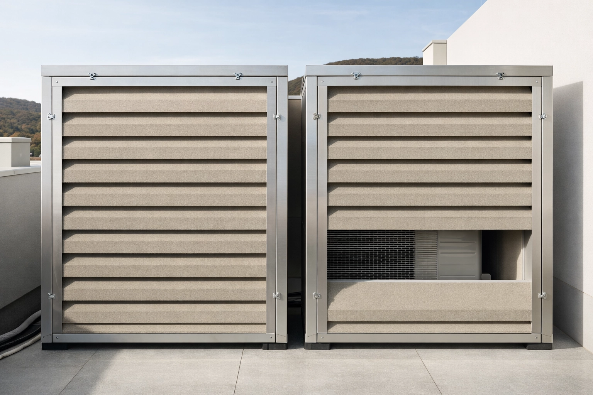

Ruhige Räume entstehen nicht durch Zufall — sie entstehen durch Planung. Wir planen und messen Luft- und Trittschallschutz für Neubau und Sanierung nach ÖNORM B 8115 und ISO 16283. Mit besonderer Expertise im Holzbau.
Planung und messtechnischer Nachweis der Luftschalldämmung von Wänden, Decken, Türen und Fassaden — nach ÖNORM B 8115 und ISO 16283-1. Wir begleiten von der Detailplanung bis zur Abnahmemessung und liefern einen vollständigen Prüfbericht.
Anwendungsbereiche
Trittschall ist oft der kritischste Schallschutzaspekt im Wohnbau — und der am schwersten zu korrigierende nach dem Bau. Wir planen Trittschalldämmkonstruktionen und messen den bewerteten Norm-Trittschallpegel L'n,w nach ISO 16283-2.

Holzbau stellt besondere akustische Anforderungen — leichte Konstruktionen, Körperschallübertragung, Flankendämmung. Wir bringen spezifisches Fachwissen für Massivholz, Holzrahmen- und Holztafelbau mit.
Lüftungsanlagen, Pumpen, Aufzüge und haustechnische Einrichtungen sind häufige Lärmquellen in Gebäuden. Wir messen, bewerten und planen Maßnahmen zur Reduktion von Körperschall und Luftschallabstrahlung aus gebäudetechnischen Anlagen.
ÖNORM B 8115
Schallschutz und Raumakustik im Hochbau
Österreichische Norm für Anforderungen an die Luft- und Trittschalldämmung in Wohn-, Büro- und Zweckbauten. Maßgeblich für alle Baugenehmigungen und Abnahmen in Österreich.
ISO 16283-1 / -2
In-situ Messungen der Schalldämmung
Internationale Norm für die Feldmessung von Luft- (-1) und Trittschalldämmung (-2) in fertiggestellten Gebäuden. Grundlage für alle unsere baumessungen und Abnahmeprüfungen.
OIB-Richtlinie 5
Schallschutz (Bautechnikrichtlinie)
Österreichische Bautechnikrichtlinie, die Schallschutzanforderungen für baugenehmigungspflichtige Vorhaben regelt. Unsere Leistungen sind direkt auf die OIB-RL5-Nachweisanforderungen abgestimmt.
Wir prüfen Ihre Konstruktionsdetails auf Normerfüllung und identifizieren potenzielle Schwachstellen — bevor sie gebaut sind.
Bei Bedarf begleiten wir kritische Bauphasen vor Ort — besonders relevant bei Holzbau, Trockenbau und haustechnischen Durchdringungen.
Messung der Luft- und Trittschalldämmung im Fertigbau nach ISO 16283 — an allen vereinbarten Messpunkten, vollständig protokolliert.
Vollständiger Prüfbericht mit allen gemessenen Kennwerten, normgerechter Bewertung und Abweichungsanalyse — verwendbar für Behörden, Käufer und Gerichte.
Messpräzision
R'w und L'n,w nach ISO 16283 — kalibriert, reproduzierbar, normgerecht bewertet.
Egal ob Neubau, Sanierung oder Holzbau — sprechen Sie mit uns. Wir liefern normgerechte Planung und gerichtsfeste Messung.